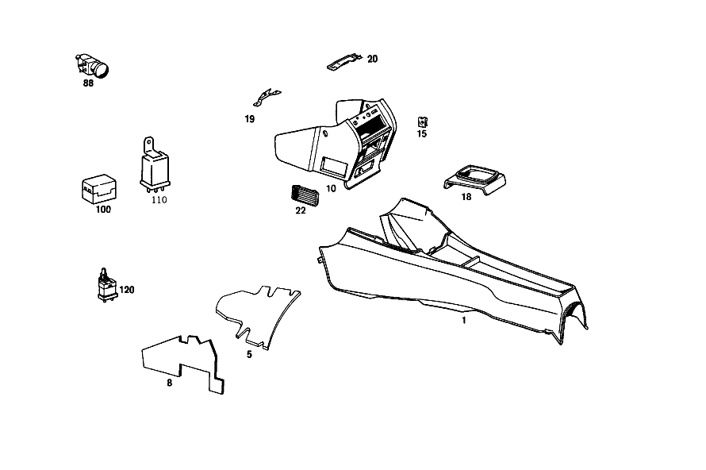

| № | Артикул | Название | Кол. | Примечание | Ограничение |
|---|---|---|---|---|---|
| 1 | A 115 680 08 50 | Обшивка | 1 | Z 55.908/01, Z 55.908/02, Z 55.908/03, Z 55.908/04, Z 55.908/05, Z 55.908/06, Z 55.908/07, Z 55.908/08, Z 55.908/09, Z 55.908/10 [406] ПРИ ЗАКАЗЕ УКАЗЫВАТЬ НОМЕР ЦВЕТА | |
| 1 | A 115 680 08 50 | Обшивка | 1 | Z 55.908/11, Z 55.908/12, Z 55.908/13, Z 55.908/14, Z 55.908/15, Z 55.908/16, Z 55.908/17, Z 55.908/18 [406] ПРИ ЗАКАЗЕ УКАЗЫВАТЬ НОМЕР ЦВЕТА | |
| 10 | A 115 680 31 79 | КОРПУС | - | Z 55.908/01, Z 55.908/04, Z 55.908/09, Z 55.908/10 [060] ИСПОЛЬЗ.СТАР.НОМЕР ДЕТАЛИ ПРИ ШАССИ: 114.011 105132 114.023 100476 114.060 110583 114.073 103371 115.010 UNTIL PRODUCTION STOP 115.015 231513 115.017 022502 115.110 426603 115.117 047938 | |
| 10 | A 115 680 32 79 | КОРПУС | 1 | Z 55.908/01, Z 55.908/02, Z 55.908/03, Z 55.908/04, Z 55.908/05, Z 55.908/06, Z 55.908/09, Z 55.908/10 [406] ПРИ ЗАКАЗЕ УКАЗЫВАТЬ НОМЕР ЦВЕТА | |
| 10 | A 115 680 31 79 | КОРПУС | - | Z 55.908/11, Z 55.908/12, Z 55.908/13, Z 55.908/14 [060] ИСПОЛЬЗ.СТАР.НОМЕР ДЕТАЛИ ПРИ ШАССИ: 114.011 105132 114.023 100476 114.060 110583 114.073 103371 115.010 UNTIL PRODUCTION STOP 115.015 231513 115.017 022502 115.110 426603 115.117 047938 | |
| 10 | A 115 680 32 79 | КОРПУС | 1 | Z 55.908/11, Z 55.908/12, Z 55.908/13, Z 55.908/14, Z 55.908/17, Z 55.908/18 [406] ПРИ ЗАКАЗЕ УКАЗЫВАТЬ НОМЕР ЦВЕТА | |
| 15 | A 000 994 49 45 | предохранитель | - | Z 55.908/01, Z 55.908/02, Z 55.908/03, Z 55.908/04, Z 55.908/05, Z 55.908/06, Z 55.908/07, Z 55.908/08, Z 55.908/09, Z 55.908/10 | |
| 15 | A 000 994 82 45 | предохранитель | 2 | Z 55.908/01, Z 55.908/02, Z 55.908/03, Z 55.908/04, Z 55.908/05, Z 55.908/06, Z 55.908/07, Z 55.908/08, Z 55.908/09, Z 55.908/10 | |
| 15 | A 000 994 49 45 | предохранитель | - | Z 55.908/11, Z 55.908/12, Z 55.908/13, Z 55.908/14, Z 55.908/15, Z 55.908/16, Z 55.908/17, Z 55.908/18 | |
| 15 | A 000 994 82 45 | предохранитель | 2 | Z 55.908/11, Z 55.908/12, Z 55.908/13, Z 55.908/14, Z 55.908/15, Z 55.908/16, Z 55.908/17, Z 55.908/18 | |
| 18 | A 115 683 01 36 | ПАНЕЛЬ | 1 | Z 55.908/04, Z 55.908/05, Z 55.908/06, Z 55.908/08 [406] ПРИ ЗАКАЗЕ УКАЗЫВАТЬ НОМЕР ЦВЕТА | |
| 18 | A 115 683 01 36 | ПАНЕЛЬ | 1 | Z 55.908/11, Z 55.908/12, Z 55.908/14, Z 55.908/16, Z 55.908/18 [406] ПРИ ЗАКАЗЕ УКАЗЫВАТЬ НОМЕР ЦВЕТА | |
| 19 | A 115 683 04 35 | УГОЛ | 1 | Z 55.908/04, Z 55.908/05, Z 55.908/06, Z 55.908/08 | |
| 19 | A 115 683 04 35 | УГОЛ | 1 | Z 55.908/11, Z 55.908/12, Z 55.908/14, Z 55.908/16, Z 55.908/18 | |
| 20 | A 115 683 05 35 | УГОЛ | 1 | Z 55.908/04, Z 55.908/05, Z 55.908/06, Z 55.908/08 | |
| 20 | A 115 683 05 35 | УГОЛ | 1 | Z 55.908/11, Z 55.908/12, Z 55.908/14, Z 55.908/16, Z 55.908/18 | |
| 22 | A 115 687 02 79 | КОРПУС | 3 | AT AIR CONDITIONER CASE Z 55.908/01, Z 55.908/02, Z 55.908/03, Z 55.908/04, Z 55.908/05, Z 55.908/06, Z 55.908/07, Z 55.908/08, Z 55.908/09, Z 55.908/10 [406] ПРИ ЗАКАЗЕ УКАЗЫВАТЬ НОМЕР ЦВЕТА | |
| 22 | A 115 687 02 79 | КОРПУС | 3 | Z 55.908/11, Z 55.908/12, Z 55.908/13, Z 55.908/14, Z 55.908/15, Z 55.908/16, Z 55.908/17, Z 55.908/18 [406] ПРИ ЗАКАЗЕ УКАЗЫВАТЬ НОМЕР ЦВЕТА | |
| 25 | A 115 805 01 19 | БАЧОК | - | Z 55.908/02, Z 55.908/03, Z 55.908/05, Z 55.908/06 | |
| 25 | A 115 800 05 19 | БАЧОК | 1 | Рулевое управление: Влево Z 55.908/02, Z 55.908/03, Z 55.908/05, Z 55.908/06 [402] БОЛЬШЕ НЕ ПОСТАВЛЯЕТСЯ [024] FROM CHASSIS: 114.010 031095 114.015 033617 [032] UP TO CHASSIS: 114.010 053122 114.011 001283 114.015 061963 114.023 002937 | |
| 30 | A 112 805 00 55 | НАПРАВЛЯЮЩАЯ | 1 | Z 55.908/02, Z 55.908/03, Z 55.908/05, Z 55.908/06 [024] FROM CHASSIS: 114.010 031095 114.015 033617 [032] UP TO CHASSIS: 114.010 053122 114.011 001283 114.015 061963 114.023 002937 | |
| 32 | A 115 997 19 81 | резиновая втулка | 1 | Рулевое управление: Влево Z 55.908/02, Z 55.908/03, Z 55.908/05, Z 55.908/06 [024] FROM CHASSIS: 114.010 031095 114.015 033617 [032] UP TO CHASSIS: 114.010 053122 114.011 001283 114.015 061963 114.023 002937 | |
| 35 | A 112 800 01 78 | КЛАПАН | 1 | Рулевое управление: Влево Z 55.908/02, Z 55.908/03, Z 55.908/05, Z 55.908/06 [024] FROM CHASSIS: 114.010 031095 114.015 033617 [032] UP TO CHASSIS: 114.010 053122 114.011 001283 114.015 061963 114.023 002937 | |
| 38 | A 111 805 50 90 | КОЛПАЧОК | 1 | Рулевое управление: Влево Z 55.908/02, Z 55.908/03, Z 55.908/05, Z 55.908/06 [024] FROM CHASSIS: 114.010 031095 114.015 033617 [032] UP TO CHASSIS: 114.010 053122 114.011 001283 114.015 061963 114.023 002937 | |
| 40 | A 100 270 00 72 | БОЛТ | - | Рулевое управление: Влево Z 55.908/02, Z 55.908/03, Z 55.908/05, Z 55.908/06 | |
| 40 | A 100 990 06 63 | Полый болт | 1 | Рулевое управление: Влево Z 55.908/02, Z 55.908/03, Z 55.908/05, Z 55.908/06 [024] FROM CHASSIS: 114.010 031095 114.015 033617 [032] UP TO CHASSIS: 114.010 053122 114.011 001283 114.015 061963 114.023 002937 | |
| 42 | A 007 997 61 82 | Шланг | 0 | ЗАКАЗЫВАТЬ ПОГОННЫМИ МЕТРАМИ; 9X2.75 MM Рулевое управление: Влево Z 55.908/01, Z 55.908/02, Z 55.908/03, Z 55.908/04, Z 55.908/05, Z 55.908/06, Z 55.908/07, Z 55.908/08, Z 55.908/09, Z 55.908/10 [404] ЗАКАЗЫВАТЬ ПОГОННЫМИ МЕТРАМИ | |
| 42 | A 007 997 61 82 | - Шланг | 4 | *** 30mm; 9X2.75 MM Рулевое управление: Влево Z 55.908/02, Z 55.908/03, Z 55.908/05, Z 55.908/06 [404] ЗАКАЗЫВАТЬ ПОГОННЫМИ МЕТРАМИ [032] UP TO CHASSIS: 114.010 053122 114.011 001283 114.015 061963 114.023 002937 | |
| 42 | A 007 997 61 82 | - Шланг | 1 | *** 90mm; 9X2.75 MM Рулевое управление: Влево Z 55.908/02, Z 55.908/03, Z 55.908/05, Z 55.908/06 [404] ЗАКАЗЫВАТЬ ПОГОННЫМИ МЕТРАМИ [024] FROM CHASSIS: 114.010 031095 114.015 033617 [032] UP TO CHASSIS: 114.010 053122 114.011 001283 114.015 061963 114.023 002937 | |
| 42 | A 007 997 61 82 | - Шланг | 1 | *** 30mm; 9X2.75 MM Рулевое управление: Влево Z 55.908/01, Z 55.908/02, Z 55.908/04, Z 55.908/05, Z 55.908/07, Z 55.908/08 [404] ЗАКАЗЫВАТЬ ПОГОННЫМИ МЕТРАМИ | |
| 42 | A 007 997 61 82 | - Шланг | 1 | *** 50mm; 9X2.75 MM Рулевое управление: Влево Z 55.908/01, Z 55.908/02, Z 55.908/04, Z 55.908/05, Z 55.908/07, Z 55.908/08 [404] ЗАКАЗЫВАТЬ ПОГОННЫМИ МЕТРАМИ | |
| 50 | A 115 805 04 22 | РАСПРЕДЕЛИТЕЛЬ | - | Рулевое управление: Влево Z 55.908/02, Z 55.908/03, Z 55.908/05, Z 55.908/06 [415] ПРИМЕЧ. ПО ЗАМЕНЕ ПРИМЕНИМО ТОЛЬКО ДЛЯ СТОЯЩИХ РЯДОМ ПОЗИЦИЙ | |
| 50 | A 117 078 01 45 | Штуцер ответвления | 1 | Рулевое управление: Влево Z 55.908/02, Z 55.908/03, Z 55.908/05, Z 55.908/06 [024] FROM CHASSIS: 114.010 031095 114.015 033617 [032] UP TO CHASSIS: 114.010 053122 114.011 001283 114.015 061963 114.023 002937 | |
| 52 | A 115 805 03 22 | РАСПРЕДЕЛИТЕЛЬ | - | Рулевое управление: Влево Z 55.908/02, Z 55.908/03, Z 55.908/05, Z 55.908/06 | |
| 52 | A 117 078 01 45 | Штуцер ответвления | 1 | Рулевое управление: Влево Z 55.908/02, Z 55.908/03, Z 55.908/05, Z 55.908/06 [024] FROM CHASSIS: 114.010 031095 114.015 033617 [032] UP TO CHASSIS: 114.010 053122 114.011 001283 114.015 061963 114.023 002937 | |
| 55 | A 005 997 59 82 | ТРУБОПРОВОД | 0 | ЗАКАЗЫВАТЬ ПОГОННЫМИ МЕТРАМИ Z 55.908/01, Z 55.908/02, Z 55.908/03, Z 55.908/04, Z 55.908/05, Z 55.908/06, Z 55.908/07, Z 55.908/08, Z 55.908/09, Z 55.908/10 [404] ЗАКАЗЫВАТЬ ПОГОННЫМИ МЕТРАМИ | |
| 55 | A 005 997 59 82 | ТРУБОПРОВОД | 1 | Рулевое управление: Влево Z 55.908/02, Z 55.908/03, Z 55.908/05, Z 55.908/06 [404] ЗАКАЗЫВАТЬ ПОГОННЫМИ МЕТРАМИ [024] FROM CHASSIS: 114.010 031095 114.015 033617 [032] UP TO CHASSIS: 114.010 053122 114.011 001283 114.015 061963 114.023 002937 | |
| 60 | A 008 997 84 82 | ШЛАНГ | - | Z 55.908/01, Z 55.908/02, Z 55.908/03, Z 55.908/04, Z 55.908/05, Z 55.908/06, Z 55.908/07, Z 55.908/08, Z 55.908/09, Z 55.908/10 | |
| 60 | A 008 997 85 82 | Шланг | NB | ЗЕЛЁНЫЙ (MITTELGRUEN) 350 MM Z 55.908/01, Z 55.908/02, Z 55.908/03, Z 55.908/04, Z 55.908/05, Z 55.908/06, Z 55.908/07, Z 55.908/08, Z 55.908/09, Z 55.908/10 | |
| 62 | A 008 997 85 82 | Шланг | NB | DARK GREEN 550 MM LONG Z 55.908/01, Z 55.908/02, Z 55.908/03, Z 55.908/04, Z 55.908/05, Z 55.908/06, Z 55.908/07, Z 55.908/08, Z 55.908/09, Z 55.908/10 | |
| 65 | A 108 988 08 78 | Скоба | - | 15X15 MM Z 55.908/02, Z 55.908/03, Z 55.908/05, Z 55.908/06 | |
| 65 | A 114 988 01 78 | Скоба | 1 | (HOSE LINE TO BRAKE BOOSTER); 15 X 5 MM Z 55.908/02, Z 55.908/03, Z 55.908/05, Z 55.908/06 | |
| 68 | A 002 545 49 28 | ШТЕКЕР | - | Z 55.908/01, Z 55.908/02, Z 55.908/03, Z 55.908/04, Z 55.908/05, Z 55.908/06, Z 55.908/07, Z 55.908/08, Z 55.908/09, Z 55.908/10 | |
| 68 | A 008 545 37 28 | Сцепление, механическое | 1 | 2\-POLE (ASHTRAV LAMP CALBE HARNESS); 2\-PIN Z 55.908/01, Z 55.908/02, Z 55.908/03, Z 55.908/04, Z 55.908/05, Z 55.908/06, Z 55.908/07, Z 55.908/08, Z 55.908/09, Z 55.908/10 | |
| 70 | A 002 545 51 28 | ШТЕКЕР | - | Z 55.908/02, Z 55.908/03, Z 55.908/05, Z 55.908/06 | |
| 70 | A 004 545 86 28 | Штекер | - | Z 55.908/02, Z 55.908/05 | |
| 70 | A 007 545 00 28 | КОРПУС ШТЕК. ГНЕЗДА | - | Z 55.908/02, Z 55.908/05 | |
| 70 | A 015 545 49 28 | КОРПУС ШТЕК. ГНЕЗДА | 1 | ASHTRAY LAMP;4\-POLE; 4\-PIN Z 55.908/02, Z 55.908/05 [024] FROM CHASSIS: 114.010 031095 114.015 033617 [031] UP TO CHASSIS: 114.010 044486 114.023 001704 | |
| 72 | A 004 545 85 28 | ШТЕКЕР | - | Z 55.908/02, Z 55.908/03, Z 55.908/05, Z 55.908/06 | |
| 72 | A 008 545 20 28 | Нижняя часть корпуса | 1 | 1\-POLE (ASHTRAY LAMP CABLE HARNESS); 1\-PIN Z 55.908/02, Z 55.908/05 [024] FROM CHASSIS: 114.010 031095 114.015 033617 [031] UP TO CHASSIS: 114.010 044486 114.023 001704 | |
| 75 | A 002 545 49 28 | ШТЕКЕР | - | Z 55.908/02, Z 55.908/03, Z 55.908/05, Z 55.908/06 | |
| 75 | A 008 545 37 28 | Сцепление, механическое | 1 | 2\-POLE (ADDITIONAL BLOWER CABLE HARNESS; 2\-PIN Z 55.908/02, Z 55.908/05 [024] FROM CHASSIS: 114.010 031095 114.015 033617 [031] UP TO CHASSIS: 114.010 044486 114.023 001704 | |
| 78 | A 002 988 48 78 | Скоба | 1 | (TWO\-POLE CABLE CONNECTOR TO FRONT LEFT SIDE MEMBER) Рулевое управление: Влево Z 55.908/02, Z 55.908/03, Z 55.908/05, Z 55.908/06 | |
| 80 | A 001 997 42 90 | связующее вещество | - | Z 55.908/02, Z 55.908/03, Z 55.908/05, Z 55.908/06 | |
| 80 | A 001 997 43 90 | Кабельная стяжка | 3 | 140mm; 9X250 MM Z 55.908/02, Z 55.908/03, Z 55.908/05, Z 55.908/06 | |
| 85 | A 115 821 02 10 | ЭЛ. ПРОВОД | - | Z 55.908/01, Z 55.908/02, Z 55.908/03, Z 55.908/04, Z 55.908/05, Z 55.908/06, Z 55.908/07, Z 55.908/08, Z 55.908/09, Z 55.908/10 | |
| 85 | A 115 821 10 10 | ЭЛ. ПРОВОД | - | Z 55.908/01, Z 55.908/02, Z 55.908/03, Z 55.908/04, Z 55.908/05, Z 55.908/06, Z 55.908/07, Z 55.908/08, Z 55.908/09, Z 55.908/10 | |
| 85 | A 115 821 17 10 | ЭЛ. ПРОВОД | - | Z 55.908/01, Z 55.908/02, Z 55.908/03, Z 55.908/04, Z 55.908/05, Z 55.908/06, Z 55.908/07, Z 55.908/08, Z 55.908/09, Z 55.908/10 | |
| 85 | A 123 820 00 17 | СВЕТОВОД | 1 | (FROM ASHTRAY LAMP TO CIGAR LIGHTER) Z 55.908/01, Z 55.908/02, Z 55.908/03, Z 55.908/04, Z 55.908/05, Z 55.908/06, Z 55.908/07, Z 55.908/08, Z 55.908/09, Z 55.908/10 [023] FROM CHASSIS: 114.010 027703 114.015 028985 115.010 030096 115.015 027774 115.110 066741 115.115 030607 | |
| 86 | A 115 821 17 10 | ЭЛ. ПРОВОД | - | Z 55.908/11, Z 55.908/12, Z 55.908/13, Z 55.908/14, Z 55.908/15, Z 55.908/16, Z 55.908/17, Z 55.908/18 | |
| 86 | A 123 820 00 17 | СВЕТОВОД | 1 | Z 55.908/11, Z 55.908/12, Z 55.908/13, Z 55.908/14, Z 55.908/15, Z 55.908/16, Z 55.908/17, Z 55.908/18 | |
| 88 | A 115 825 00 45 | ФОНАРЬ | - | Z 55.908/01, Z 55.908/02, Z 55.908/03, Z 55.908/04, Z 55.908/05, Z 55.908/06, Z 55.908/07, Z 55.908/08, Z 55.908/09, Z 55.908/10 | |
| 88 | A 115 820 00 52 | ЛАМПА ДЛЯ ЧТЕНИЯ | 1 | ПЕПЕЛЬНИЦА НА КОРПУСЕ Z 55.908/01, Z 55.908/02, Z 55.908/03, Z 55.908/04, Z 55.908/05, Z 55.908/06, Z 55.908/07, Z 55.908/08, Z 55.908/09, Z 55.908/10 [402] БОЛЬШЕ НЕ ПОСТАВЛЯЕТСЯ | |
| 88 | A 115 820 00 52 | ЛАМПА ДЛЯ ЧТЕНИЯ | 1 | Z 55.908/11, Z 55.908/12, Z 55.908/13, Z 55.908/14, Z 55.908/15, Z 55.908/16, Z 55.908/17, Z 55.908/18 [402] БОЛЬШЕ НЕ ПОСТАВЛЯЕТСЯ | |
| 92 | A 115 825 02 53 | ПРИКУРИВАТЕЛЬ | 1 | АВТОМАТИЧЕСКИ 12V Z 55.908/01, Z 55.908/02, Z 55.908/03, Z 55.908/04, Z 55.908/05, Z 55.908/06, Z 55.908/07, Z 55.908/08, Z 55.908/09, Z 55.908/10 | |
| 92 | A 115 825 02 53 | ПРИКУРИВАТЕЛЬ | 1 | Z 55.908/11, Z 55.908/12, Z 55.908/13, Z 55.908/14, Z 55.908/15, Z 55.908/16, Z 55.908/17, Z 55.908/18 | |
| 95 | A 000 825 05 51 | - ВСТАВКА | 1 | с COIL AND WITH KNOB Z 55.908/01, Z 55.908/02, Z 55.908/03, Z 55.908/04, Z 55.908/05, Z 55.908/06, Z 55.908/07, Z 55.908/08, Z 55.908/09, Z 55.908/10 | |
| 95 | A 000 825 05 51 | - ВСТАВКА | 1 | Z 55.908/11, Z 55.908/12, Z 55.908/13, Z 55.908/14, Z 55.908/15, Z 55.908/16, Z 55.908/17, Z 55.908/18 | |
| 98 | A 000 825 06 52 | - СПИРАЛЬ НАКАЛИВАНИЯ | - | Z 55.908/01, Z 55.908/02, Z 55.908/03, Z 55.908/04, Z 55.908/05, Z 55.908/06, Z 55.908/07, Z 55.908/08, Z 55.908/09, Z 55.908/10 | |
| 98 | A 000 825 02 52 | - Прикуриватель | 1 | Z 55.908/01, Z 55.908/02, Z 55.908/03, Z 55.908/04, Z 55.908/05, Z 55.908/06, Z 55.908/07, Z 55.908/08, Z 55.908/09, Z 55.908/10 | |
| 98 | A 000 825 06 52 | - СПИРАЛЬ НАКАЛИВАНИЯ | - | Z 55.908/11, Z 55.908/12, Z 55.908/13, Z 55.908/14, Z 55.908/15, Z 55.908/16, Z 55.908/17, Z 55.908/18 | |
| 98 | A 000 825 02 52 | - Прикуриватель | 1 | Z 55.908/11, Z 55.908/12, Z 55.908/13, Z 55.908/14, Z 55.908/15, Z 55.908/16, Z 55.908/17, Z 55.908/18 | |
| 100 | A 000 545 72 01 | БЛОК ПРЕДОХРАНИТЕЛЕЙ | 1 | Рулевое управление: Влево Z 55.908/02, Z 55.908/05 [024] FROM CHASSIS: 114.010 031095 114.015 033617 [031] UP TO CHASSIS: 114.010 044486 114.023 001704 | |
| 120 | A 000 545 94 11 | Переключатель | 1 | Рулевое управление: Влево Z 55.908/02, Z 55.908/05 [024] FROM CHASSIS: 114.010 031095 114.015 033617 [031] UP TO CHASSIS: 114.010 044486 114.023 001704 | |
| 125 | A 108 546 02 53 | РАСПОРН. ТРУБКА | 2 | Рулевое управление: Влево Z 55.908/02, Z 55.908/03, Z 55.908/05, Z 55.908/06 [402] БОЛЬШЕ НЕ ПОСТАВЛЯЕТСЯ | |
| 130 | A 115 830 37 62 | КОЖУХ СИСТЕМЫ ОТОПЛЕНИЯ | 1 | Рулевое управление: Влево Z 55.908/01, Z 55.908/02, Z 55.908/03, Z 55.908/04, Z 55.908/05, Z 55.908/06, Z 55.908/07, Z 55.908/08 [026] FROM CHASSIS: 114.010 024608 114.015 025020 115.010 026147 115.015 023701 115.110 057164 115.115 026254 [027] UP TO CHASSIS: 114.010 031061 114.015 033608 115.010 034112 115.015 032214 115.110 076504 115.115 035040 | |
| 132 | A 115 830 44 62 | КОЖУХ СИСТЕМЫ ОТОПЛЕНИЯ | 1 | Рулевое управление: Влево Z 55.908/02, Z 55.908/03, Z 55.908/04, Z 55.908/05, Z 55.908/06 [028] FROM CHASSIS: 114.010 031062 114.015 033609 115.010 034113 115.015 032215 115.110 076505 115.115 035041 | |
| 135 | A 115 835 00 39 | КРЫШКА | 1 | Рулевое управление: Влево Z 55.908/02, Z 55.908/03, Z 55.908/04, Z 55.908/05, Z 55.908/06 | |
| 140 | A 115 800 06 75 | ЭЛЕМЕНТ | - | Z 55.908/02, Z 55.908/03, Z 55.908/05, Z 55.908/06 [028] FROM CHASSIS: 114.010 031062 114.015 033609 115.010 034113 115.015 032215 115.110 076505 115.115 035041 [045] UP TO CHASSIS: 114.011 017603 114.015 131833 114.023 009935 115.010 112907 115.015 145988 115.110 299409 [046] UP TO CHASSIS: 114.010 UNTIL PRODUCTION STOP 115.115 153337 [033] FROM CHASSIS: 115.010 060996 115.015 066577 115.110 152515 115.115 072239 | |
| 140 | A 115 800 14 75 | ЭЛЕМЕНТ | - | Z 55.908/01, Z 55.908/02, Z 55.908/03, Z 55.908/04, Z 55.908/05, Z 55.908/06, Z 55.908/07, Z 55.908/08 | |
| 140 | A 000 800 17 75 | Исполнительный элемент | 1 | Z 55.908/02, Z 55.908/03, Z 55.908/04, Z 55.908/05, Z 55.908/06 [047] FROM CHASSIS: 114.011 017604 114.015 131834 114.023 009936 115.010 112908 115.015 145989 115.110 299410 | |
| 145 | A 115 800 07 75 | ЭЛЕМЕНТ | - | Z 55.908/02, Z 55.908/03, Z 55.908/05, Z 55.908/06 [028] FROM CHASSIS: 114.010 031062 114.015 033609 115.010 034113 115.015 032215 115.110 076505 115.115 035041 [045] UP TO CHASSIS: 114.011 017603 114.015 131833 114.023 009935 115.010 112907 115.015 145988 115.110 299409 [046] UP TO CHASSIS: 114.010 UNTIL PRODUCTION STOP 115.115 153337 [033] FROM CHASSIS: 115.010 060996 115.015 066577 115.110 152515 115.115 072239 | |
| 145 | A 115 800 15 75 | ЭЛЕМЕНТ | - | Z 55.908/01, Z 55.908/02, Z 55.908/03, Z 55.908/04, Z 55.908/05, Z 55.908/06, Z 55.908/07, Z 55.908/08 | |
| 145 | A 000 800 11 75 | Исполнительный элемент | 1 | Z 55.908/02, Z 55.908/03, Z 55.908/04, Z 55.908/05, Z 55.908/06 [047] FROM CHASSIS: 114.011 017604 114.015 131834 114.023 009936 115.010 112908 115.015 145989 115.110 299410 | |
| 148 | A 115 805 09 74 | Тяга переключения передач | 1 | Z 55.908/02, Z 55.908/03, Z 55.908/04, Z 55.908/05, Z 55.908/06 [047] FROM CHASSIS: 114.011 017604 114.015 131834 114.023 009936 115.010 112908 115.015 145989 115.110 299410 | |
| 150 | A 115 805 10 74 | Тяга переключения передач | 1 | Z 55.908/02, Z 55.908/03, Z 55.908/04, Z 55.908/05, Z 55.908/06 [047] FROM CHASSIS: 114.011 017604 114.015 131834 114.023 009936 115.010 112908 115.015 145989 115.110 299410 | |
| 155 | A 000 994 19 60 | ПРЕДОХРАНИТЕЛЬ | - | Z 55.908/01, Z 55.908/02, Z 55.908/03, Z 55.908/04, Z 55.908/05, Z 55.908/06, Z 55.908/07, Z 55.908/08 | |
| 155 | N 918002 004000 | Пружинный зажим | 1 | Z 55.908/02, Z 55.908/03, Z 55.908/04, Z 55.908/05, Z 55.908/06 [047] FROM CHASSIS: 114.011 017604 114.015 131834 114.023 009936 115.010 112908 115.015 145989 115.110 299410 | |
| 158 | A 115 995 01 01 | ХОМУТ | 1 | Z 55.908/01, Z 55.908/02, Z 55.908/03, Z 55.908/04, Z 55.908/05, Z 55.908/06, Z 55.908/07, Z 55.908/08 | |
| A 115 680 00 79 | КОРПУС | - | Z 55.908/01, Z 55.908/02, Z 55.908/03, Z 55.908/04, Z 55.908/05, Z 55.908/06, Z 55.908/07, Z 55.908/08 [022] UP TO CHASSIS: 114.010 027702 114.015 028984 115.010 030095 115.015 027773 115.110 066740 115.115 030606 | ||
| A 115 680 20 79 | КОРПУС | - | Z 55.908/01, Z 55.908/02, Z 55.908/03, Z 55.908/04, Z 55.908/05, Z 55.908/06, Z 55.908/07, Z 55.908/08 | ||
| A 115 680 30 79 | КОРПУС | 1 | Z 55.908/01, Z 55.908/02, Z 55.908/03, Z 55.908/04, Z 55.908/05, Z 55.908/06 | ||
| N 007981 003275 | Шуруп | 2 | Z 55.908/01, Z 55.908/02, Z 55.908/03, Z 55.908/04, Z 55.908/05, Z 55.908/06, Z 55.908/07, Z 55.908/08, Z 55.908/09, Z 55.908/10 | ||
| N 000125 004314 | Шайба | - | Z 55.908/01, Z 55.908/02, Z 55.908/03, Z 55.908/04, Z 55.908/05, Z 55.908/06, Z 55.908/07, Z 55.908/08, Z 55.908/09, Z 55.908/10 | ||
| N 000125 004311 | Шайба | 2 | Z 55.908/01, Z 55.908/02, Z 55.908/03, Z 55.908/04, Z 55.908/05, Z 55.908/06, Z 55.908/07, Z 55.908/08, Z 55.908/09, Z 55.908/10 | ||
| N 007981 003243 | Шуруп | 4 | Z 55.908/04, Z 55.908/05, Z 55.908/06, Z 55.908/08 | ||
| N 009021 004108 | Шайба | - | Z 55.908/04, Z 55.908/05, Z 55.908/06, Z 55.908/08 | ||
| A 094 990 63 08 | Шайба | 2 | Z 55.908/04, Z 55.908/05, Z 55.908/06, Z 55.908/08 | ||
| N 007983 003216 | Шуруп | 1 | Z 55.908/04, Z 55.908/05, Z 55.908/06, Z 55.908/08 | ||
| N 000125 006421 | Шайба | 2 | Рулевое управление: Влево Z 55.908/02, Z 55.908/03, Z 55.908/05, Z 55.908/06 [024] FROM CHASSIS: 114.010 031095 114.015 033617 [032] UP TO CHASSIS: 114.010 053122 114.011 001283 114.015 061963 114.023 002937 | ||
| A 094 990 68 10 | Пружинное кольцо | 2 | Рулевое управление: Влево Z 55.908/02, Z 55.908/03, Z 55.908/05, Z 55.908/06 [024] FROM CHASSIS: 114.010 031095 114.015 033617 [032] UP TO CHASSIS: 114.010 053122 114.011 001283 114.015 061963 114.023 002937 | ||
| N 000934 006007 | Гайка | 2 | Рулевое управление: Влево Z 55.908/02, Z 55.908/03, Z 55.908/05, Z 55.908/06 [024] FROM CHASSIS: 114.010 031095 114.015 033617 [032] UP TO CHASSIS: 114.010 053122 114.011 001283 114.015 061963 114.023 002937 | ||
| N 072601 012800 | - Лампа накаливания | 1 | 12V/2W Z 55.908/01, Z 55.908/02, Z 55.908/03, Z 55.908/04, Z 55.908/05, Z 55.908/06, Z 55.908/07, Z 55.908/08, Z 55.908/09, Z 55.908/10 | ||
| N 007981 004261 | Шуруп | 2 | Рулевое управление: Влево Z 55.908/02, Z 55.908/03, Z 55.908/05, Z 55.908/06 | ||
| N 072581 025100 | ПРЕДОХРАНИТЕЛЬ | 1 | Рулевое управление: Влево Z 55.908/02, Z 55.908/05 [024] FROM CHASSIS: 114.010 031095 114.015 033617 [031] UP TO CHASSIS: 114.010 044486 114.023 001704 | ||
| A 003 545 01 24 | ВЫКЛЮЧАТЕЛЬ АВТОМ. | - | Z 55.908/02, Z 55.908/03, Z 55.908/05, Z 55.908/06 | ||
| A 000 546 02 35 | КОЛПАЧОК | - | Рулевое управление: Влево Z 55.908/02, Z 55.908/03, Z 55.908/05, Z 55.908/06 | ||
| A 000 546 33 35 | Защитный колпачок | 1 | Рулевое управление: Влево Z 55.908/02, Z 55.908/05 [024] FROM CHASSIS: 114.010 031095 114.015 033617 [031] UP TO CHASSIS: 114.010 044486 114.023 001704 | ||
| A 000 542 58 19 | Контактор | 1 | Рулевое управление: Влево Z 55.908/02, Z 55.908/05 [024] FROM CHASSIS: 114.010 031095 114.015 033617 [031] UP TO CHASSIS: 114.010 044486 114.023 001704 | ||
| N 007985 004129 | Винт | 2 | Рулевое управление: Влево Z 55.908/02, Z 55.908/03, Z 55.908/05, Z 55.908/06 | ||
| N 000127 004203 | Пружинное кольцо | - | Рулевое управление: Влево Z 55.908/02, Z 55.908/03, Z 55.908/05, Z 55.908/06 | ||
| N 912004 004102 | Пружинное кольцо | 2 | Рулевое управление: Влево Z 55.908/02, Z 55.908/03, Z 55.908/05, Z 55.908/06 | ||
| N 000934 004006 | Гайка | 2 | Рулевое управление: Влево Z 55.908/02, Z 55.908/03, Z 55.908/05, Z 55.908/06 | ||
| N 900055 010002 | Пружинная шайба | - | Рулевое управление: Влево Z 55.908/02, Z 55.908/03, Z 55.908/05, Z 55.908/06 | ||
| N 000137 010205 | Пружинная шайба | 1 | Рулевое управление: Влево Z 55.908/02, Z 55.908/03, Z 55.908/05, Z 55.908/06 | ||
| N 000936 010003 | ГАЙКА | 1 | Рулевое управление: Влево Z 55.908/02, Z 55.908/03, Z 55.908/05, Z 55.908/06 | ||
| A 115 830 13 62 | КОЖУХ СИСТЕМЫ ОТОПЛЕНИЯ | - | Рулевое управление: Влево Z 55.908/01, Z 55.908/02, Z 55.908/03, Z 55.908/04, Z 55.908/05, Z 55.908/06, Z 55.908/07, Z 55.908/08 [025] UP TO CHASSIS: 114.010 024607 114.015 025019 115.010 026146 115.015 023700 115.110 057163 115.115 026253 | ||
| A 115 830 27 62 | КОЖУХ СИСТЕМЫ ОТОПЛЕНИЯ | - | Рулевое управление: Влево Z 55.908/01, Z 55.908/02, Z 55.908/03, Z 55.908/04, Z 55.908/05, Z 55.908/06, Z 55.908/07, Z 55.908/08 | ||
| N 912001 004000 | Механический фиксатор | 1 | (CONTROL ROD TO VACUUM ELEMENT) Z 55.908/02, Z 55.908/03, Z 55.908/04, Z 55.908/05, Z 55.908/06 [047] FROM CHASSIS: 114.011 017604 114.015 131834 114.023 009936 115.010 112908 115.015 145989 115.110 299410 | ||
| N 007985 004125 | Винт | 1 | Z 55.908/01, Z 55.908/02, Z 55.908/03, Z 55.908/04, Z 55.908/05, Z 55.908/06, Z 55.908/07, Z 55.908/08 | ||
| N 007983 003216 | Шуруп | 1 | Z 55.908/11, Z 55.908/12, Z 55.908/14, Z 55.908/16, Z 55.908/18 | ||
| N 009021 004108 | Шайба | - | Z 55.908/11, Z 55.908/12, Z 55.908/14, Z 55.908/16, Z 55.908/18 | ||
| A 094 990 63 08 | Шайба | 2 | Z 55.908/11, Z 55.908/12, Z 55.908/14, Z 55.908/16, Z 55.908/18 | ||
| N 007981 003275 | Шуруп | 2 | Z 55.908/11, Z 55.908/12, Z 55.908/13, Z 55.908/14, Z 55.908/15, Z 55.908/16, Z 55.908/17, Z 55.908/18 | ||
| N 000125 004314 | Шайба | - | Z 55.908/11, Z 55.908/12, Z 55.908/13, Z 55.908/14, Z 55.908/15, Z 55.908/16, Z 55.908/17, Z 55.908/18 | ||
| N 000125 004311 | Шайба | 2 | Z 55.908/11, Z 55.908/12, Z 55.908/13, Z 55.908/14, Z 55.908/15, Z 55.908/16, Z 55.908/17, Z 55.908/18 | ||
| N 046247 006000 | - ШТЕК. ГНЕЗДО | 1 | Z 55.908/11, Z 55.908/12, Z 55.908/13, Z 55.908/14, Z 55.908/15, Z 55.908/16, Z 55.908/17, Z 55.908/18 | ||
| N 072601 012800 | - Лампа накаливания | 1 | 12V/2W Z 55.908/11, Z 55.908/12, Z 55.908/13, Z 55.908/14, Z 55.908/15, Z 55.908/16, Z 55.908/17, Z 55.908/18 | ||
| A 115 825 00 45 | ФОНАРЬ | - | Z 55.908/11, Z 55.908/12, Z 55.908/13, Z 55.908/14, Z 55.908/15, Z 55.908/16, Z 55.908/17, Z 55.908/18 | ||
| A 115 820 00 52 | ЛАМПА ДЛЯ ЧТЕНИЯ | 1 | ПЕПЕЛЬНИЦА НА КОРПУСЕ Z 55.908/11, Z 55.908/12, Z 55.908/13, Z 55.908/14, Z 55.908/15, Z 55.908/16, Z 55.908/17, Z 55.908/18 [402] БОЛЬШЕ НЕ ПОСТАВЛЯЕТСЯ |
Позиций: 130 · подписано на схемах: 89 · колесо — плавный зум в курсор, перетаскивание — пан, двойной клик — зум, клик по артикулу — скопировать.